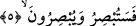

Doğdu mu güneş, silindi tüm yıldız.
Kaside-i Bürde şâiri de şöyle söyler:
Fark attı peygamberlere, yaratılış ve huyda,
Eremediler mertebesine, ilim ve keremde
Çünkü o güneş, onlar yıldız bu âlemde,
Ondan aldılar ışığı parladılar katran gecelerde.
“Seni ziyâret etmeyen akrabanı ziyâret et. Sana zulmedeni bağışla, sana kötülük
edene sen iyilik et” [36] ifâdesinin işâret ettiği güzel huylar Peygamber Efendimiz
(s.a.)’in ahlâkındandır. Çünkü o kendisi bizzat yapmadıkça ümmetine hiç bir şeyi
emretmemiştir. Bir hadis-i şerifte Peygamberimiz (s.a.) şöyle buyurur: “Bir mü’min
güzel ahlâkı ile bütün geceyi namazla, bütün günü oruçla geçiren kimsenin ereceği
dereceye erebilir.” [37]
Ali b. Mûsa Rıza kanalı ile Hz. Ali’ye dayanan bir hadis-i şerifte Peygamberimiz
(s.a.) şöyle buyurmuşlardır: “Güzel ahlâkı seçiniz. Çünkü güzel ahlâk hiç kuşkusuz
cennete götürür. Kötü ahlâktan kaçınınız. Çünkü kötü ahlâk kuşkusuz cehenneme
sürükler.” [38]
5. Yakında sen de göreceksin, onlar da.
“Hanginizde delilik olduğunu,” hanginizin delilik fitnesine mübtelâ olduğunu
“yakında sen de göreceksin onlar da.” Arapçada “absartuhu” yâni filancayı gördüm ve
“basurtu bihi” onu idrâk ettim ve bildim şeklinde iki çeşit kullanım vardır. Çünkü
“basar” hem vücudumuzda ki görme organımız olan göze ve hem de eşyayı kavrayan
kalp gücüne denir. Göz için “basîra” kelimesi hemen hemen hiç kullanılmayacak
derecede azdır.
Buna göre âyet-i kerîmenin mânâsı; “Kıyâmet günü hak bâtıldan ayrılıp ortaya çıktığı
zaman kimin deli olduğunu sen de bileceksin onlar da bilecekler” şeklindedir.
Kâşânî bu âyeti şöyle tefsir eder: Ölümle birlikte perde açıldığı zaman kimin mecnûn
olduğunu sen de bileceksin onlar da. Mukatil der ki: Allah’ın bu ifâdesi Bedir azâbının
meydana geleceği noktasında bir tehdiddir. Kâşifî şöyle der: Azap indiği zaman
dîvânenin sen mi yoksa onlar mı olduğu kendilerine mâlûm olur.
Bu âyet-i kerîme Peygamber Efendimiz’e İslâm’ın ve müslümanların gâlip
geleceklerine, düşmanlarından intikam alacaklarına dâir Allah tarafından yapılmış olan
bir vaaddir.